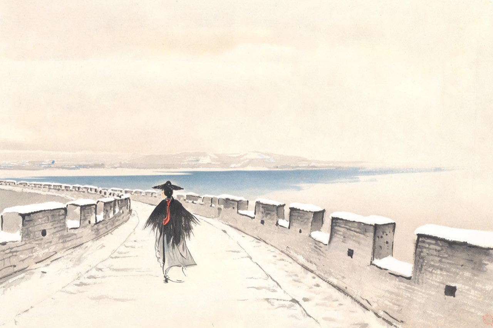
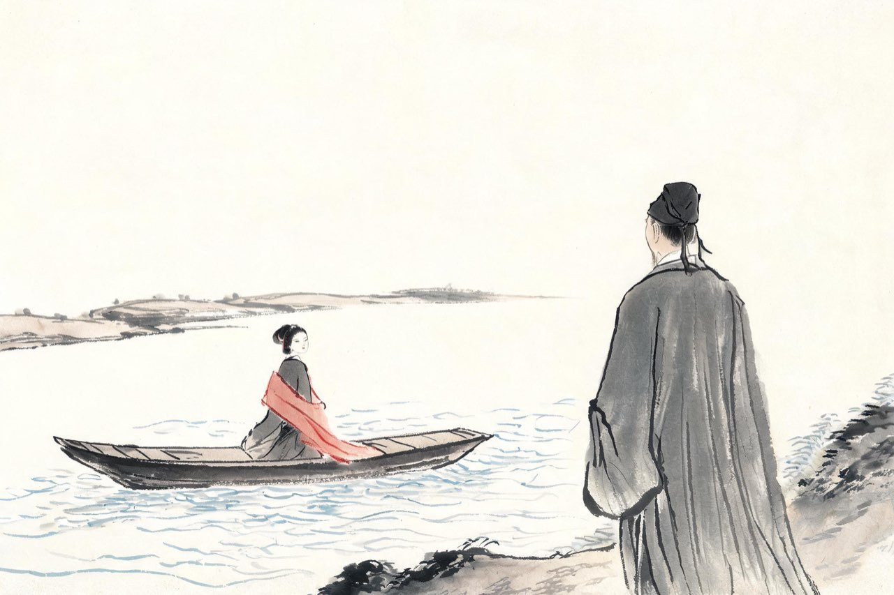
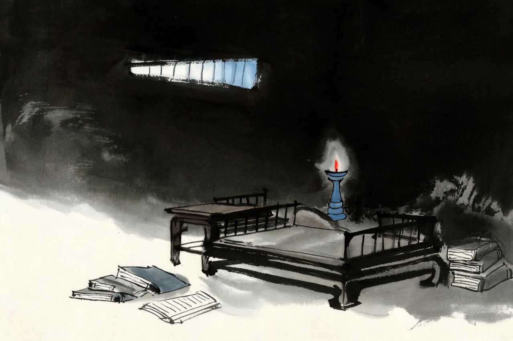

李清照 · 1128-1129
建康
无所之

雪中循城
江宁的一年多，你们住在围城的秩序里。他在任知府，你在乱世中过着难得安稳的日子——书箱开着，日子照旧。
每逢大雪，你顶笠披蓑，沿着城墙走很远的路，看雪，寻诗。得了句子，回来邀他同和——他常常和不出，苦着脸推敲，你在一旁等。
雪天的城头，能望见长江。江那边，是回不去的山东。
这是你们最后的安稳时光。
注
- 此段出自周煇记易安族人转述——笔记材料，画面具体，细节从简取意
- 江宁府于建炎三年五月升建康府；本场景在升府前，章内一律用旧称
缒城之夜
建炎三年二月，御营统制官王亦在城中密谋作乱。消息走漏，军官李谟设伏，天亮前把乱事平定了。
清点之时，人们发现了一件更难堪的事：知府赵明诚，和通判、观察推官两人一起，在夜里用绳索缒下城墙，逃走了。
乱平了，官丢了。三月，朝廷处分下来：坐弃城之罪，罢官。
同舟西上的时候，你们之间是什么气氛，没有记载。船过当涂，前面就是乌江。
注
- 缒城宵遁、三月坐弃城罢官，均见《要录》——本页深色底：她看见丈夫的另一面
- 同舟西上路线：具舟上芜湖、入姑孰，将卜居赣水上，从年谱
项羽兵败垓下，突围到乌江。亭长撑船等他，说江东虽小，亦足王也。他笑答：天之亡我，我何渡为——不肯过江，自刎而死。一千三百年后，你们的船经过这里。江边有项羽的祠。你站在祠前想那个人：他有一万个理由渡江，他偏不——
夏日绝句
生当作人杰，死亦为鬼雄。
至今思项羽，不肯过江东。
注
- 诗无自系年，通行编年系于此年过乌江；「借项羽讽赵明诚」为后人解读，诗本身是咏史，正文不采
- 乌江：今安徽和县乌江镇，江边有项羽祠（霸王祠）

池阳之别
五月，你们到了池阳。朝廷又起用他：知湖州。六月十三日，他安顿好家眷，独自登舟赴建康面圣。
你在船上送他。他坐在岸上，穿着葛衣，露着额头，精神如虎，目光烂烂射人——这个形象，你在多年后写下来，一字未改。
你心里发沉，隔着水喊：如果传来城中告急的消息，怎么办？他远远地伸手指着，大声答：从众。万不得已，先丢辎重，再丢衣被，再丢书册卷轴，再丢古器——只有宗器，自己抱着，与你共存亡，别忘了。
船开了。岸上那个精神如虎的人，越来越远。
注
- 「宗器」：宗庙礼器，收藏中最重的一等——他把家国之重一并托付了
- 这是两人最后一次完整告别——《后序》成文时回望，日与貌皆具

八月十八
七月末，他到建康，就病倒了。暑热成疾。你得到消息，乘船一日夜赶了三百里。
到时已病重。他性子急，胡乱服药，寒热交攻，疟疾转成痢疾。八月十八日，他取笔作诗，绝笔而终——没有分香卖履式的琐碎交代，什么遗嘱都没有留下。年四十九。
葬毕，余无所之。你大病一场，只剩喘息。
你四十五岁。书二万卷、金石刻二千卷，从此没有主人。
注
- 「分香卖履」：曹操临终分香与诸姬、嘱家人卖履自给——谓琐碎家事遗嘱；《后序》言其无此，谓身后萧然
- 赵明诚年四十九（1081-1129）；本页深色底为全篇最黑——丧夫与寄托的双重失去
无所之
大病未愈，局势急转直下：金兵大举南下，朝廷从建康一路向杭州、越州方向逃。你无处可归，让两个老吏押运剩下的书二万卷、金石刻二千卷，运往洪州——他的妹婿在那里，可以投靠。
冬十二月，金人陷洪州。那二万卷，云散了。
你自己跟着逃难的人流往东南走，去追朝廷的行踪。从此，你的行李，和你的国家，都在流亡。
「葬毕，余无所之」——你后来只用六个字，写完了那个冬天。
注
- 洪州书物运出与其散失，均《后序》自述；妹婿任兵部侍郎，随卫太后一行在洪州
- 本场景收束于随流民东下——「无所之」三字为《后序》原文